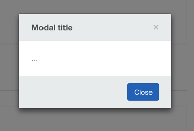

Modals

avModal
avModal is a service that allows the creation of modal windows.
Constructor
import tpl from './template';
const modal = new AvModal({
scope: this.$scope,
templateUrl: tpl
});Static
AvModal.create({
show: true,
scope: this.$scope,
templateUrl: tpl
});Options
show
Boolean that triggers modal to immediately show upon creation. Default is false.
scope
Pass $scope to the modal's controller.
templateUrl
Url or function that loads the template.
controller
Same as Angular controller.
controllerAs
Same as Angular's controller as syntax.
locals
Values become injectable in the controller based on their key names.
AvModal.create({
locals: {
someKey: 'This is a value passed in using locals, they become injectable values into the controller based on their key name.'
}
});Methods
AvModal.create
Create a modal window on demand without having to call the contructor.